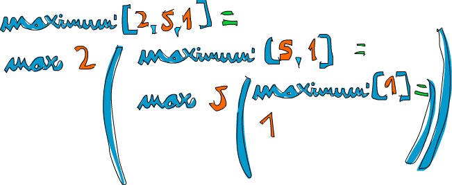

遞迴
你好，遞迴！
前面的章節中我們簡要談了一下遞迴。而在本章，我們會深入地瞭解到它為何在 Haskell 中是如此重要，能夠以遞迴思想寫出簡潔優雅的程式碼。
如果你還不知道什麼是遞迴，就讀這個句子。哈哈！開個玩笑而已！遞迴實際上是定義函數以呼叫自身的方式。在數學定義中，遞迴隨處可見，如斐波那契數列 （fibonacci）。它先是定義兩個非遞迴的數：F(0)=0,F(1)=1，表示斐波那契數列的前兩個數為 0 和 1。然後就是對其他自然數，其斐波那契數就是它前面兩個數字的和，即 F(N)=F(N-1)+F(N-2)。這樣一來，F(3) 就是 F(2)+F(1)，進一步便是 (F(1)+F(0))+F(1)。已經下探到了前面定義的非遞迴斐波那契數，可以放心地說 F(3) 就是 2 了。在遞迴定義中聲明的一兩個非遞迴的值（如 F(0) 和 F(1)） 也可以稱作邊界條件，這對遞迴函數的正確求值至關重要。要是前面沒有定義 F(0) 和 F(1) 的話，它下探到 0 之後就會進一步到負數，你就永遠都得不到結果了。一不留神它就算到了 F(-2000)=F(-2001)+F(-2002)，並且永遠都算不到頭！
遞迴在 Haskell 中非常重要。命令式語言要求你提供求解的步驟，Haskell 則傾向于讓你提供問題的描述。這便是 Haskell 沒有 while 或 for 循環的原因，遞迴是我們的替代方案。
實作 Maximum
maximum 函數取一組可排序的 List（屬於 Ord Typeclass） 做參數，並回傳其中的最大值。想想，在命令式風格中這一函數該怎麼實現。很可能你會設一個變數來存儲當前的最大值，然後用循環遍歷該 List，若存在比這個值更大的元素，則修改變數為這一元素的值。到最後，變數的值就是運算結果。唔！描述如此簡單的算法還頗費了點口舌呢！
現在看看遞迴的思路是如何：我們先定下一個邊界條件，即處理單個元素的 List 時，回傳該元素。如果該 List 的頭部大於尾部的最大值，我們就可以假定較長的 List 的最大值就是它的頭部。而尾部若存在比它更大的元素，它就是尾部的最大值。就這麼簡單！現在，我們在 Haskell 中實現它
maximum' :: (Ord a) => [a] -> a
maximum' [] = error "maximum of empty list"
maximum' [x] = x
maximum' (x:xs)
| x > maxTail = x
| otherwise = maxTail
where maxTail = maximum' xs
如你所見，模式匹配與遞迴簡直就是天造地設！大多數命令式語言中都沒有模式匹配，於是你就得造一堆 if-else 來測試邊界條件。而在這裡，我們僅需要使用模式將其表示出來。第一個模式說，如果該 List 為空，崩潰！就該這樣，一個空 List 的最大值能是啥？我不知道。第二個模式也表示一個邊緣條件，它說， 如果這個 List 僅包含單個元素，就回傳該元素的值。
現在是第三個模式，執行動作的地方。 通過模式匹配，可以取得一個 List 的頭部和尾部。這在使用遞迴處理 List 時是十分常見的。出於習慣，我們用個 where 語句來表示 maxTail 作為該 List 中尾部的最大值，然後檢查頭部是否大於尾部的最大值。若是，回傳頭部；若非，回傳尾部的最大值。
我們取個 List [2,5,1] 做例子來看看它的工作原理。當呼叫 maximum' 處理它時，前兩個模式不會被匹配，而第三個模式匹配了它並將其分為 2 與 [5,1]。 where 子句再取 [5,1] 的最大值。於是再次與第三個模式匹配，並將 [5,1] 分割為 5 和 [1]。繼續，where 子句取 [1] 的最大值，這時終於到了邊緣條件！回傳 1。進一步，將 5 與 [1] 中的最大值做比較，易得 5，現在我們就得到了 [5,1] 的最大值。再進一步，將 2 與 [5,1] 中的最大值相比較，可得 5 更大，最終得 5。
改用 max 函數會使程式碼更加清晰。如果你還記得，max 函數取兩個值做參數並回傳其中較大的值。如下便是用 max 函數重寫的 maximun'
maximum' :: (Ord a) => [a] -> a maximum' [] = error "maximum of empty list" maximum' [x] = x maximum' (x:xs) = max x (maximum' xs)
太漂亮了！一個 List 的最大值就是它的首個元素與它尾部中最大值相比較所得的結果，簡明扼要。
來看幾個遞迴函數
現在我們已經瞭解了遞迴的思路,接下來就使用遞迴來實現幾個函數. 先實現下 replicate 函數, 它取一個 Int 值和一個元素做參數, 回傳一個包含多個重複元素的 List, 如 replicate 3 5 回傳 [5,5,5]. 考慮一下, 我覺得它的邊界條件應該是負數. 如果要 replicate 重複某元素零次, 那就是空 List. 負數也是同樣, 不靠譜.
replicate' :: (Num i, Ord i) => i -> a -> [a]
replicate' n x
| n <= 0 = []
| otherwise = x:replicate' (n-1) x
在這裡我們使用了 guard 而非模式匹配, 是因為這裡做的是布林判斷. 如果 n 小於 0 就回傳一個空 List, 否則, 回傳以 x 作首個元素並後接重複 n-1 次 x 的 List. 最後, (n-1) 的那部分就會令函數抵達邊緣條件.
Note: Num 不是 Ord 的子集, 表示數字不一定得拘泥于排序, 這就是在做加減法比較時要將 Num 與 Ord 型別約束區別開來的原因.
接下來實現 take 函數, 它可以從一個 List 取出一定數量的元素. 如 take 3 [5,4,3,2,1], 得 [5,4,3]. 若要取零或負數個的話就會得到一個空 List. 同樣, 若是從一個空 List中取值, 它會得到一個空 List. 注意, 這兒有兩個邊界條件, 寫出來:
take' :: (Num i, Ord i) => i -> [a] -> [a]
take' n _
| n <= 0 = []
take' _ [] = []
take' n (x:xs) = x : take' (n-1) xs
首個模式辨認若為 0 或負數, 回傳空 List. 同時注意這裡用了一個 guard 卻沒有指定 otherwise 部分, 這就表示 n 若大於 0, 會轉入下一模式. 第二個模式指明了若試圖從一個空 List 中取值, 則回傳空 List. 第三個模式將 List 分割為頭部和尾部, 然後表明從一個 List 中取多個元素等同於令 x 作頭部後接從尾部取 n-1 個元素所得的 List. 假如我們要從 [4,3,2,1] 中取 3 個元素, 試着從紙上寫出它的推導過程
reverse 函數簡單地反轉一個 List, 動腦筋想一下它的邊界條件! 該怎樣呢? 想想...是空 List! 空 List 的反轉結果還是它自己. Okay, 接下來該怎麼辦? 好的, 你猜的出來. 若將一個 List 分割為頭部與尾部, 那它反轉的結果就是反轉後的尾部與頭部相連所得的 List.
reverse' :: [a] -> [a] reverse' [] = [] reverse' (x:xs) = reverse' xs ++ [x]
繼續下去!
Haskell 支持無限 List，所以我們的遞迴就不必添加邊界條件。這樣一來，它可以對某值計算個沒完, 也可以產生一個無限的資料結構，如無限 List。而無限 List 的好處就在於我們可以在任意位置將它斷開.
repeat 函數取一個元素作參數, 回傳一個僅包含該元素的無限 List. 它的遞迴實現簡單的很, 看:
repeat' :: a -> [a] repeat' x = x:repeat' x
呼叫 repeat 3 會得到一個以 3 為頭部並無限數量的 3 為尾部的 List, 可以說 repeat 3 運行起來就是 3:repeat 3 , 然後 3:3:3:3 等等. 若執行 repeat 3, 那它的運算永遠都不會停止。而 take 5 (repeat 3) 就可以得到 5 個 3, 與 replicate 5 3 差不多.
zip 取兩個 List 作參數並將其捆在一起。zip [1,2,3] [2,3] 回傳 [(1,2),(2,3)], 它會把較長的 List 從中間斷開, 以匹配較短的 List. 用 zip 處理一個 List 與空 List 又會怎樣? 嗯, 會得一個空 List, 這便是我們的限制條件, 由於 zip 取兩個參數, 所以要有兩個邊緣條件
zip' :: [a] -> [b] -> [(a,b)] zip' _ [] = [] zip' [] _ = [] zip' (x:xs) (y:ys) = (x,y):zip' xs ys
前兩個模式表示兩個 List 中若存在空 List, 則回傳空 List. 第三個模式表示將兩個 List 捆綁的行為, 即將其頭部配對並後跟捆綁的尾部. 用 zip 處理 [1,2,3] 與 ['a','b'] 的話, 就會在 [3] 與 [] 時觸及邊界條件, 得到 (1,'a'):(2,'b'):[] 的結果,與 [(1,'a'),(2,'b')] 等價.
再實現一個標準庫函數 -- elem! 它取一個元素與一個 List 作參數, 並檢測該元素是否包含于此 List. 而邊緣條件就與大多數情況相同, 空 List. 大家都知道空 List 中不包含任何元素, 便不必再做任何判斷
elem' :: (Eq a) => a -> [a] -> Bool
elem' a [] = False
elem' a (x:xs)
| a == x = True
| otherwise = a `elem'` xs
這很簡單明瞭。若頭部不是該元素, 就檢測尾部, 若為空 List 就回傳 False.
"快速"排序
假定我們有一個可排序的 List, 其中元素的型別為 Ord Typeclass 的成員. 現在我們要給它排序! 有個排序算法非常的酷, 就是快速排序 (quick sort), 睿智的排序方法. 儘管它在命令式語言中也不過 10 行, 但在 Haskell 下邊要更短, 更漂亮, 儼然已經成了 Haskell 的招牌了. 嗯, 我們在這裡也實現一下. 或許會顯得很俗氣, 因為每個人都用它來展示 Haskell 究竟有多優雅!
它的型別聲明應為 quicksort :: (Ord a) => [a] -> [a], 沒啥奇怪的. 邊界條件呢? 如料，空 List。排過序的空 List 還是空 List。接下來便是算法的定義：排過序的 List 就是令所有小於等於頭部的元素在先(它們已經排過了序), 後跟大於頭部的元素(它們同樣已經拍過了序)。 注意定義中有兩次排序，所以就得遞迴兩次！同時也需要注意算法定義的動詞為"是"什麼而非"做"這個, "做"那個, 再"做"那個...這便是函數式編程之美！如何才能從 List 中取得比頭部小的那些元素呢？List Comprehension。好，動手寫出這個函數！
quicksort :: (Ord a) => [a] -> [a]
quicksort [] = []
quicksort (x:xs) =
let smallerSorted = quicksort [a | a <- xs, a <= x]
biggerSorted = quicksort [a | a <- xs, a > x]
in smallerSorted ++ [x] ++ biggerSorted
小小的測試一下, 看看結果是否正確~
ghci> quicksort [10,2,5,3,1,6,7,4,2,3,4,8,9] [1,2,2,3,3,4,4,5,6,7,8,9,10] ghci> quicksort "the quick brown fox jumps over the lazy dog" " abcdeeefghhijklmnoooopqrrsttuuvwxyz"
booyah! 如我所說的一樣! 若給 [5,1,9,4,6,7,3] 排序，這個算法就會取出它的頭部，即 5。 將其至于分別比它大和比它小的兩個 List 中間，得 [1,4,3] ++ [5] ++ [9,6,7], 我們便知道了當排序結束之時，5會在第四位，因為有3個數比它小每，也有三個數比它大。好的，接着排 [1,4,3] 與 [9,6,7], 結果就出來了！對它們的排序也是使用同樣的函數，將它們分成許多小塊，最終到達臨界條件，即空 List 經排序依然為空，有個插圖：
橙色的部分表示已定位並不再移動的元素。從左到右看，便是一個排過序的 List。在這裡我們將所有元素與 head 作比較，而實際上就快速排序算法而言，選擇任意元素都是可以的。被選擇的元素就被稱作錨 （pivot），以方便模式匹配。小於錨的元素都在淺綠的部分，大於錨都在深綠部分，這個黃黃的坡就表示了快速排序的執行方式：
用遞迴來思考
我們已經寫了不少遞迴了，也許你已經發覺了其中的固定模式：先定義一個邊界條件，再定義個函數，讓它從一堆元素中取一個並做點事情後，把餘下的元素重新交給這個函數。 這一模式對 List、Tree 等資料結構都是適用的。例如，sum 函數就是一個 List 頭部與其尾部的 sum 的和。一個 List 的積便是該 List 的頭與其尾部的積相乘的積，一個 List 的長度就是 1 與其尾部長度的和. 等等

再者就是邊界條件。一般而言，邊界條件就是為避免程序出錯而設置的保護措施，處理 List 時的邊界條件大部分都是空 List，而處理 Tree 時的邊界條件就是沒有子元素的節點。
處理數字時也與之相似。函數一般都得接受一個值並修改它。早些時候我們編寫過一個計算 Fibonacci 的函數，它便是某數與它減一的 Fibonacci 數的積。讓它乘以零就不行了， Fibonacci 數又都是非負數，邊界條件便可以定為 1，即乘法的單位元。 因為任何數乘以 1 的結果還是這個數。而在 sum 中，加法的單位元就是 0。在快速排序中，邊界條件和單位元都是空 List，因為任一 List 與空 List 相加的結果依然是原 List。
使用遞迴來解決問題時應當先考慮遞迴會在什麼樣的條件下不可用, 然後再找出它的邊界條件和單位元, 考慮參數應該在何時切開(如對 List 使用模式匹配), 以及在何處執行遞迴.